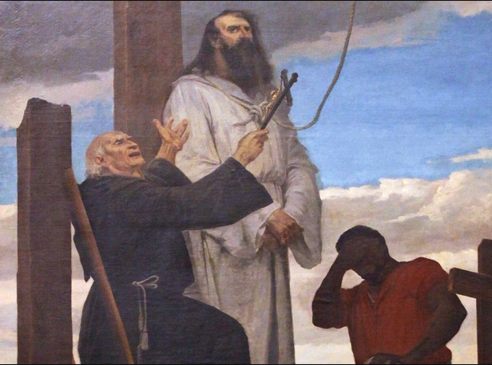

Tiradentes

O início...
No próximo dia 21 de abril, o Brasil comemora o feriado de Tiradentes. Integrante da Conjuração Mineira de 1789, o alferes Joaquim José da Silva Xavier passou à história como um precursor da Independência do Brasil, mas há mitos e verdades nessa história.

Atividades que Tiradentes desenvolveu durante sua vida
Ele desempenhou várias funções como tropeiro, minerador, fez parte do regimento militar dos Dragões de Minas Gerais e até dentista (nome que ainda não era utilizado na época), assim lhe rendeu o nome de Tiradentes.
O que motivou Tiradentes
Antes de 1822, o Brasil não era considerado um país independente. Era apenas um território que pertencia a Portugal. Sendo assim, tudo que era produzido pela colônia tinha que ser enviado para lá.
Os impostos pagos pela população do Brasil pelos produtos consumidos eram altos. Nesse contexto, nasceu Joaquim José da Silva Xavier, em São João Del Rei, em Minas Gerais, no ano de 1746.
Muitos contam que ele não se conformava com a exploração vivida pelo Brasil e queria que a pátria fosse livre. Então, decidiu se unir a outras pessoas que tinham os mesmos objetivos, entre eles, advogados, poetas e padres, para tentar libertar o Brasil dessa situação, porém, quando a Inconfidência Mineira ocorreu ainda não havia a mesma consciência de Brasil como nação que temos hoje.

A prisão
O objetivo era fazer, no chamado dia da “derrama” (em que eram cobrados da população os impostos atrasados), um protesto, alertando as pessoas sobre um plano de libertação e em seguida prendessem o governador Visconde de Barbacena. O plano não deu certo. Tiradentes foi traído por um companheiro de luta: Joaquim Silvério. Joaquim devia 700 contos ao rei de Portugal e, para ter a dívida perdoada, entrou no grupo de Tiradentes, se informou do plano e denunciou ao próprio Visconde de Barbacena.

Trinta e quatro membros do movimento foram presos, acusados de traição à coroa portuguesa. Onze deles foram condenados à morte, mas todos tiveram as penas amenizadas, menos Tiradentes.

Depois de ser preso, Tiradentes negou inicialmente a participação no movimento, depois foi o único a assumir toda a responsabilidade pela inconfidência.
Ele passou quase três anos preso e foi o único dos inconfidentes a receber a pena capital.

A sentença e o triste fim
Em 21 de abril de 1792, Joaquim José da Silva Xavier foi enforcado, decapitado e esquartejado. Trinta anos depois o Brasil enfim conquistaria a independência de Portugal.
A leitura da sentença de Tiradentes estendeu-se por 18 horas, seguida de cortejo com fanfarra. Há historiadores que apontam que essa movimentação despertou a raiva da população, o que teria contribuído para preservar a memória de Tiradentes. Executado e esquartejado, sua cabeça foi erguida em um poste, depois desapareceu e nunca mais foi localizada.
